Wireshark Network Analysis 2nd Ed · Laura Chappell
Wireless networks expose their management traffic to everyone — learn to read what's in the air.
Monitor mode, frame types, and WPA2 handshakes are the foundation of WLAN analysis.
No questions yet.
No notes yet.
💡THINK FIRST · PURPOSE OF WLAN
WLAN (802.11) adds a Layer 2 wireless medium between devices and the wired network. WLAN has three frame types: Management (control the connection), Control (help management and data frames), and Data (carry payload). When a wireless client wants to connect, what sequence of management frames does it exchange with the access point?
HINT
Think about how a wireless client finds and joins a network — scanning, authentication, association.
MODEL ANSWER
Connection sequence: (1) Probe Request/Response — client scans for APs. (2) Authentication — open or shared key. (3) Association Request/Response — client joins the AP. (4) DHCP — client gets IP address. (5) Data transfer begins. Management frames: Beacon (AP announces itself), Probe Request/Response (client scans), Authentication, Association Request/Response, Reassociation, Deauthentication, Disassociation. All management frames are unencrypted — visible in Wireshark even on encrypted networks.
The Purpose of WLAN
IEEE 802.11 (Wi-Fi) operates at the Data Link layer. WLAN adds a wireless medium between devices and the wired infrastructure. The three types of 802.11 frames are:
Management Frames (Type 0): Control the connection process. Include: Beacon, Probe Request/Response, Authentication, Deauthentication, Association Request/Response, Disassociation, Action frames
Control Frames (Type 1): Help with delivery of management and data frames. Include: ACK, RTS, CTS, Block ACK
Data Frames (Type 2): Carry the actual payload (IP packets, etc.)
WLAN REQUIRES SPECIAL CAPTURE SETUP
Capturing WLAN traffic requires putting the wireless adapter into Monitor Mode (promiscuous mode captures only traffic addressed to your MAC address — not enough for WLAN analysis). Monitor mode captures all 802.11 frames on a channel. On Linux: use airmon-ng or iw. On macOS: hold Option when clicking AirPort menu → Open Wireless Diagnostics. On Windows: use a dedicated adapter that supports monitor mode (e.g., based on Atheros chipset).
🧠
MENTAL NOTE
WLAN frames: Management(Type 0)=connection control, Control(Type 1)=delivery helpers, Data(Type 2)=payload. Beacons=AP announces itself every 100ms. Monitor mode required to see all 802.11 frames. Management frames are UNENCRYPTED even on WPA2 networks.
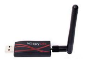
📷Figure 306 — open trace file to view
Figure 306. The MetaGeek Wi-Spy DBx adapter listens to RF signals
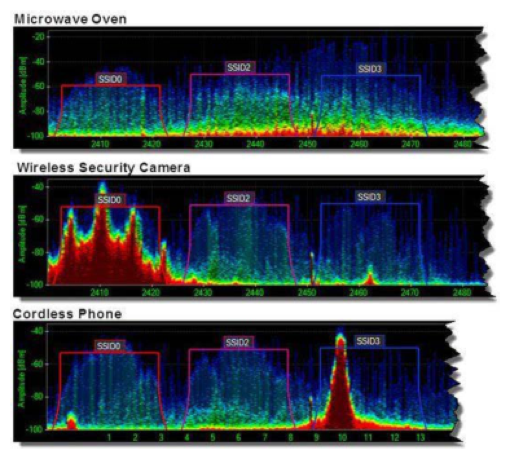
📷Figure 308 — open trace file to view
Figure 308. Chanalyzer Pro depicts the interference from a microwave oven, wireless security camera and cordless phone
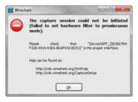
📷Figure 309 — open trace file to view
Figure 309. The Wireshark error message indicates a problem with promiscuous mode capture
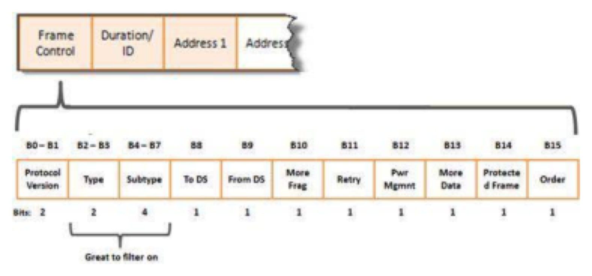
📷Figure 321 — open trace file to view
Figure 321. Inside the 802.11 Frame Control field
Ask a Question
Add a Note
💡THINK FIRST · CAPTURING WLAN TRAFFIC
You need to capture on a specific channel to see WLAN traffic. What happens to frames on other channels? And what is the difference between captured 802.11 frames and what you see when Wireshark is set to 'interpreted' mode vs raw mode?
HINT
Think about the radio frequency nature of 802.11 — each channel is a different frequency band.
MODEL ANSWER
Your adapter can only tune to ONE channel at a time — frames on other channels are not captured. To capture all clients, you'd need multiple adapters or channel hopping (but this misses frames during the hop). In Wireshark's interpreted mode, wireless frames look like normal Ethernet frames (the 802.11 header is hidden). In raw mode (with the RadioTap or PPI header), you see: signal strength (dBm), noise floor, channel, data rate, and the full 802.11 header including the Frame Control field.
Capturing WLAN Traffic
WLAN capture requirements:
Wireless adapter that supports monitor mode
Set adapter to monitor mode (OS-specific process)
Select the correct channel in Wireshark
Configure Wireshark to show 802.11 frames (not interpreted as Ethernet)
When capturing WLAN, Wireshark adds a RadioTap or Per Packet Information (PPI) header before each 802.11 frame containing: signal strength (dBm), noise, channel, data rate. This information helps diagnose signal quality issues.
To decrypt WPA/WPA2-PSK traffic, provide the passphrase in Edit → Preferences → Protocols → IEEE 802.11 → Decryption keys. Wireshark needs to capture the 4-way handshake to derive the Pairwise Transient Key (PTK) for decryption.
🧠
MENTAL NOTE
Monitor mode = capture all frames (not just your own). One channel at a time. RadioTap header shows signal strength, noise, rate. WPA2 decryption needs: passphrase + 4-way handshake in capture. SSID visible in Beacon frames (wlan_mgt.ssid) even on encrypted networks.
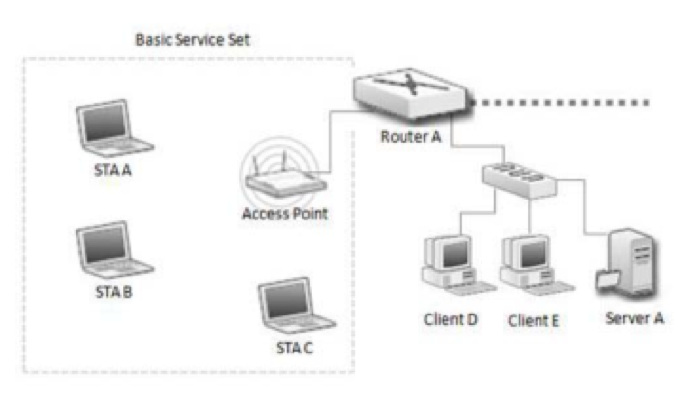
📷Figure 305 — open trace file to view
Figure 305. Simple WLAN network Analyze Signal Strength and Interference WLAN networks are dependent upon the strength of radio frequency (RF) signals to get management and data traffic through the wi
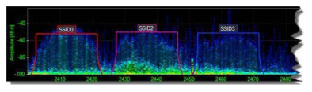
📷Figure 307 — open trace file to view
Figure 307. shows a baseline of RF activity in Chanalyzer Pro. In this example, there is strong RF activity on channel 1 (2412 MHz), channel 6 (2437 MHz) and channel 11 (2462 MHz)—these channels were c
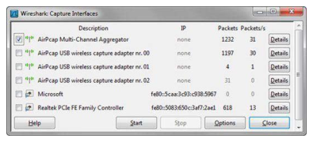
📷Figure 310 — open trace file to view
Figure 310. The Capture Interfaces list shows three AirPcap adapters and the Multi-Channel Aggregator driver as well as the native WLAN interface and the Ethernet interface
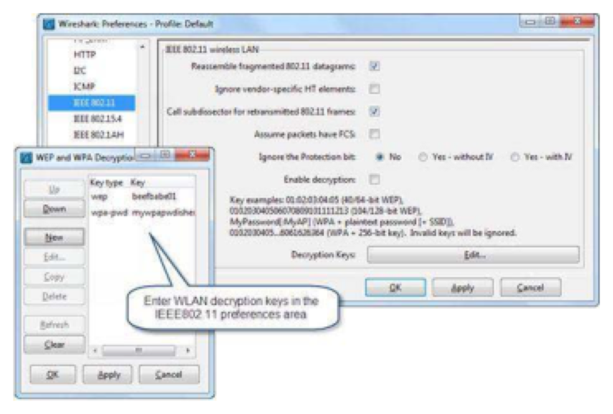
📷Figure 311 — open trace file to view
Figure 311. Enter decryption keys in the IEEE 802.11 preferences setting
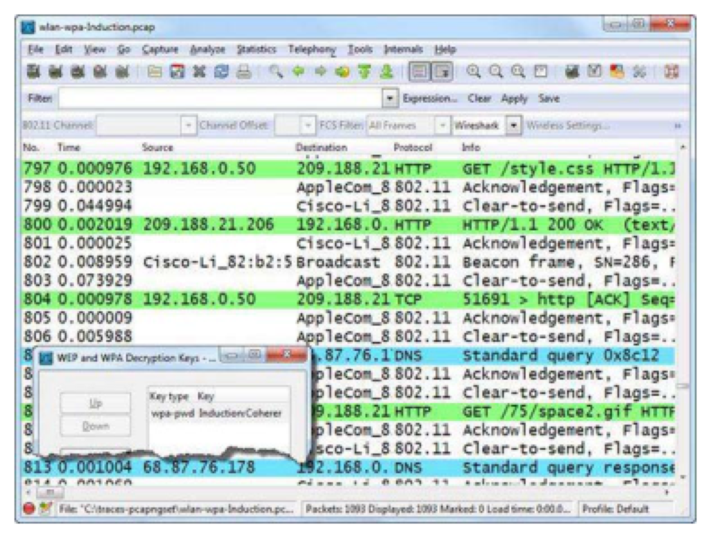
📷Figure 313 — open trace file to view
Figure 313. Wireshark decrypts the traffic once you apply the WPA password Select to Prepend Radiotap or PPI Headers You have three choices in WLAN settings for headers.
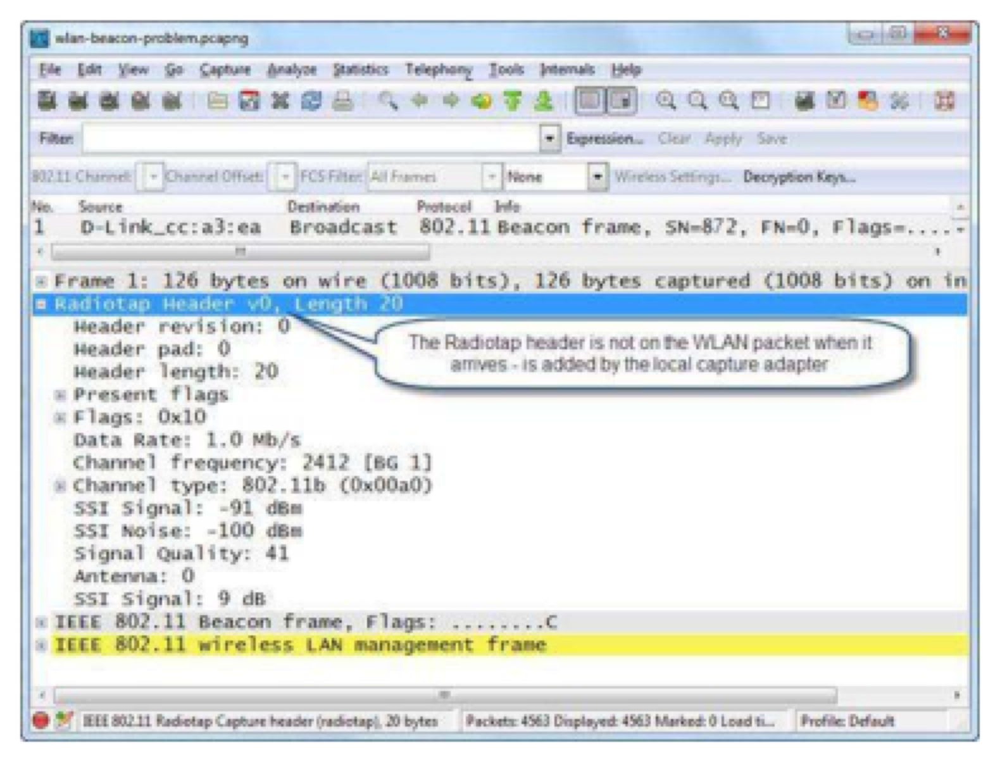
📷Figure 314 — open trace file to view
Figure 314. shows a standard 802.11 header prefaced by a Radiotap header.
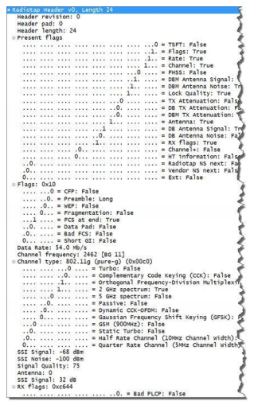
📷Figure 315 — open trace file to view
Figure 315. 802.11 Radiotap header
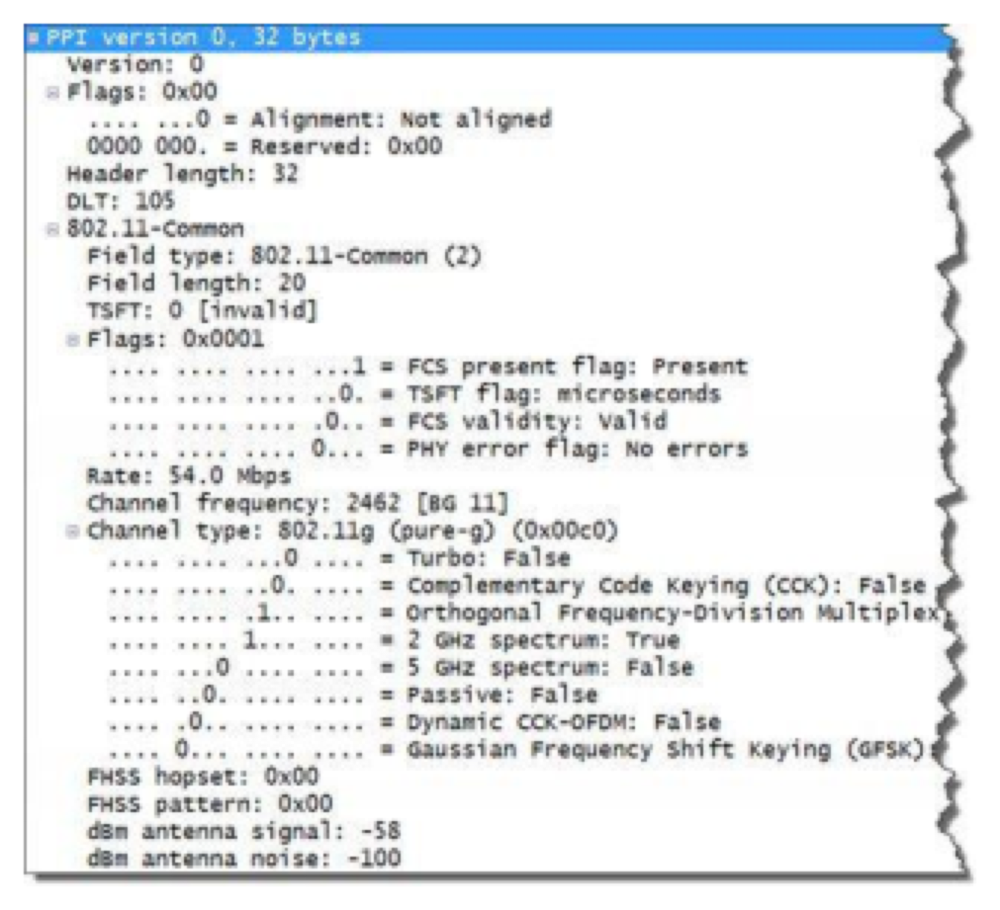
📷Figure 316 — open trace file to view
Figure 316. 802.11 PPI header Compare Signal Strength and Signal-to-Noise Ratios The signal strength indicator value defines the power, but not the quality of the signal. The value i
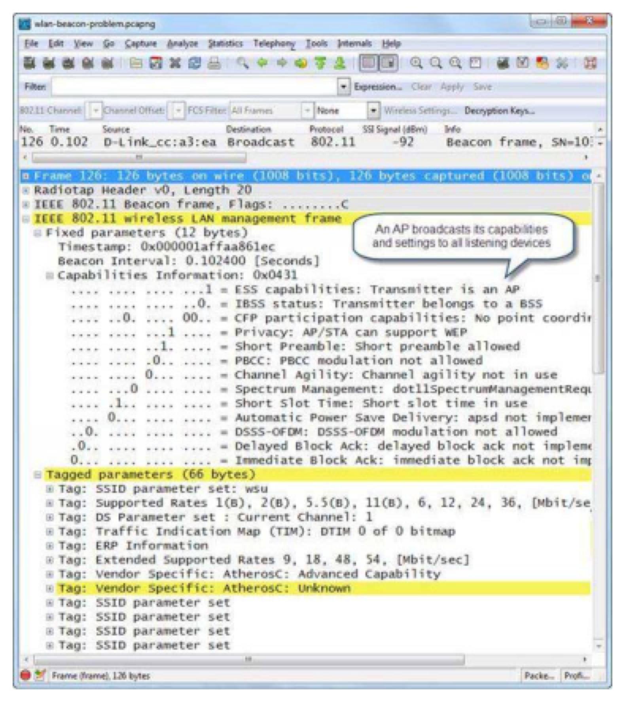
📷Figure 319 — open trace file to view
Figure 319. shows a beacon frame with the access point capabilities information section expanded.
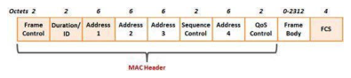
📷Figure 320 — open trace file to view
Figure 320. The basic 802.11 frame structure
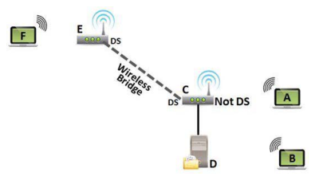
📷Figure 322 — open trace file to view
Figure 322. The WLAN header indicates if traffic is destined to or from or contained within a distribution system (DS)
Ask a Question
Add a Note
💡THINK FIRST · NORMAL WLAN TRAFFIC
An access point broadcasts Beacon frames every 100ms (by default) to announce its presence. What information is in a Beacon frame? And when a client roams from one AP to another, what process does it use to maintain connectivity?
HINT
Think about what the client needs to know to join a network (SSID, supported rates, capabilities) and how roaming works.
MODEL ANSWER
Beacon frames contain: SSID, BSSID (AP's MAC address), supported data rates, capabilities (WPA2, WMM, 802.11n/ac), beacon interval, TIM (Traffic Indication Map for power-saving clients). Roaming: client sends Probe Requests for known SSID, receives Probe Responses from multiple APs, selects the strongest signal AP, sends Reassociation Request to new AP, new AP deauthenticates client from old AP. Roaming is client-controlled in 802.11 — the AP can't force a client to roam to a better AP. This is why some clients stick to a weak signal when a better AP is available.
Analyze Normal WLAN Traffic
Normal WLAN traffic patterns to recognize:
Beacons: AP sends Beacon every 100ms (by default). Contains SSID, supported rates, WPA2 info. Filter: wlan.fc.type_subtype==8
Deauthentication/Disassociation: Disconnect frames. Can be spoofed in attacks! Filter: wlan.fc.type_subtype==12
DEAUTHENTICATION ATTACKS
In 802.11 (prior to 802.11w Management Frame Protection), Deauthentication and Disassociation frames are NOT authenticated — anyone can spoof them with any source address. An attacker can repeatedly send spoofed Deauth frames to force clients to disconnect (DoS attack) or force re-authentication to capture the 4-way handshake for offline password cracking.
🧠
MENTAL NOTE
Beacon: every 100ms, contains SSID. Probe Req/Resp: client scans. 4-way handshake: EAPOL frames, derive PTK. Deauth/Disassoc frames: unprotected (pre-802.11w), can be spoofed. Roaming: client-controlled in 802.11 standard. Filter: wlan.fc.type==0 for all management frames.
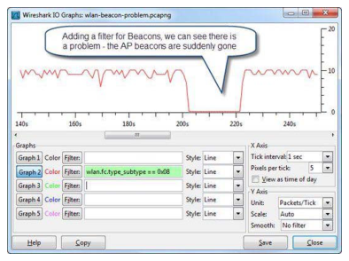
📷Figure 318 — open trace file to view
Figure 318. Filtering an IO Graph on beacons indicates that we cannot see beacons at the expected interval
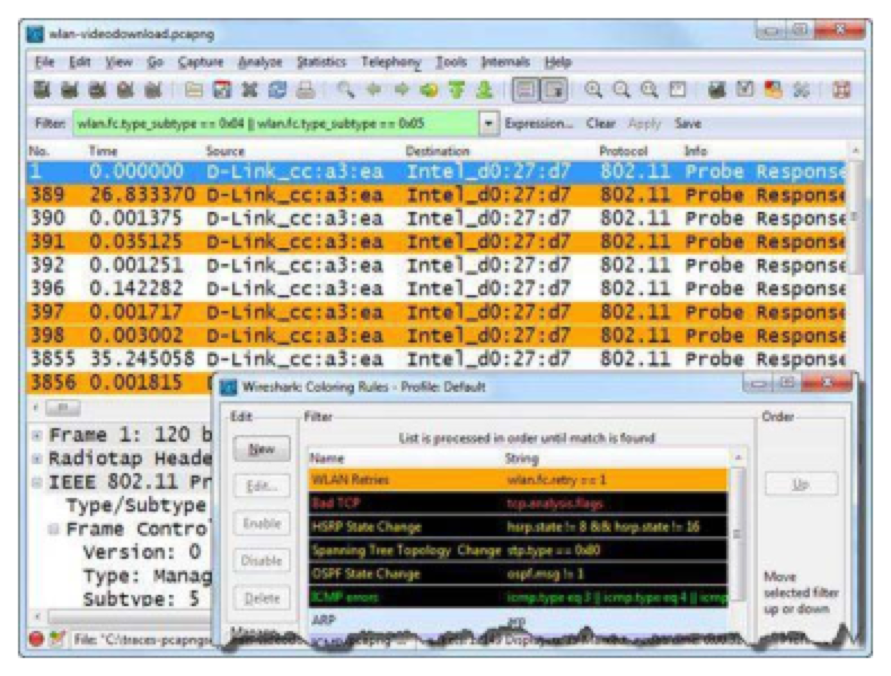
📷Figure 323 — open trace file to view
Figure 323. A display filter for probe requests and probe responses used in conjunction with a coloring rule for retransmissions
Ask a Question
Add a Note
💡THINK FIRST · WLAN PROBLEMS
WLAN problems show up as retransmissions, association failures, and roaming issues. When you see a client repeatedly sending Probe Requests with an SSID but never receiving a Probe Response, what does this indicate? And what does excessive retransmission at the 802.11 layer indicate?
HINT
Think about what prevents Probe Responses from being sent and what causes 802.11 retransmissions vs TCP retransmissions.
MODEL ANSWER
No Probe Response: (1) AP is out of range, (2) AP's SSID is hidden (AP won't respond to broadcast probes but will respond to directed probes with the correct SSID), (3) AP is full (max clients reached). 802.11 retransmissions (retry bit set in Frame Control) indicate RF interference, low signal strength, or multi-path interference — not the same as TCP retransmissions. High retry rates = RF problem. Monitor signal strength (dBm) in RadioTap header to correlate signal quality with retry rates. Negative dBm closer to 0 = stronger signal (-30 excellent, -70 marginal, -85 problematic).
WLAN Problems & Filters
Common WLAN problems and their Wireshark signatures:
High retry rate: 802.11 retry bit (wlan.fc.retry==1) set on many frames — RF interference or weak signal
Association failure: AP sends Association Response with non-zero status code
Authentication failure: AP sends Authentication Response with status code != 0
WPA2 4-way handshake failure: Client and AP can't agree on key (wrong passphrase)
Excessive deauth frames: Possible deauthentication attack or roaming problem
IP address conflicts: Multiple devices with same IP (check ARP in traffic after association)
Figure 317. Consider adding a column for the signal strength value
Ask a Question
Add a Note
CHAPTER SUMMARY
TL;DR — Chapter 26
WLAN (802.11) frames are divided into Management, Control, and Data types. Management frames control the connection process — all are unencrypted even on WPA2 networks. Capturing WLAN requires monitor mode on the wireless adapter and channel selection.
Normal WLAN traffic includes Beacons (every 100ms), Probe Requests/Responses, Authentication, Association, and the WPA2 4-way EAPOL handshake. The retry bit in the Frame Control field indicates retransmissions caused by RF issues. Wireshark can decrypt WPA2-PSK traffic if given the passphrase and the 4-way handshake is captured.
Review Questions
Q26.1
What are the three types of 802.11 frames?
HINT
Think about the different roles frames play in WLAN communication.
ANSWER
The three types of 802.11 frames are: (1) Management frames (Type 0) — control the connection process, including Beacons, Probe Requests/Responses, Authentication, Association, Deauthentication, and Disassociation. (2) Control frames (Type 1) — help with delivery of management and data frames, including ACK, RTS (Request to Send), CTS (Clear to Send), and Block ACK. (3) Data frames (Type 2) — carry the actual data payload (IP packets).
Q26.2
What mode must a wireless adapter be in to capture all 802.11 frames?
HINT
Normal (promiscuous) mode only captures traffic addressed to your adapter.
ANSWER
The wireless adapter must be in Monitor Mode (also called rfmon mode) to capture all 802.11 frames on a channel, regardless of the destination address. In normal promiscuous mode, the adapter only captures frames addressed to its MAC address. Monitor mode enables capture of all frames on the tuned channel including Beacons, Probe Requests from other clients, and management frames.
Q26.3
What information is contained in an 802.11 Beacon frame?
HINT
Think about what information a client needs to decide whether to connect to an AP.
ANSWER
An 802.11 Beacon frame (sent every 100ms by default) contains: SSID (network name), BSSID (AP's MAC address), supported data rates, beacon interval, capability information (WPA/WPA2/WMM support), Traffic Indication Map (TIM, for power-saving clients), and 802.11n/ac high-throughput capabilities. The SSID is visible in plain text even on encrypted networks — filter: wlan.fc.type_subtype==8.
Q26.4
What does a high 802.11 retry rate indicate?
HINT
Think about what causes frames to need retransmission at the radio level vs the TCP level.
ANSWER
A high 802.11 retry rate (indicated by the retry bit being set in the Frame Control field of many frames — filter: wlan.fc.retry==1) indicates RF (radio frequency) problems such as interference from other wireless networks, low signal strength (weak signal from the AP or client), multi-path interference (signal reflections), or adjacent channel interference. 802.11 retransmissions are at Layer 2 — different from TCP retransmissions. High retry rates cause throughput degradation and increased latency.
Q26.5
What Wireshark filter would you use to see only WPA2 4-way handshake frames?
HINT
The 4-way handshake uses a specific protocol for key exchange.
ANSWER
Use the display filter eapol to see only WPA2 4-way handshake frames (EAPOL = Extensible Authentication Protocol over LAN). The 4-way handshake consists of 4 EAPOL-Key frames that establish the Pairwise Transient Key (PTK) for encrypting the data channel. To decrypt WPA2-PSK traffic in Wireshark, you must capture the 4-way handshake AND provide the pre-shared key (passphrase) in Edit → Preferences → Protocols → IEEE 802.11.